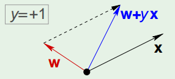

感知机- Perception， 是一种简单的线性学习模型，它在线性可分的数据上是确定收敛的。
模型描述
示意图

形式化
Input : $\mathbf{x} = (x_1,x_2, …,x_d) \in \mathbb{R}^d$ ‘feature vector with d-dimentional’
- 正例，记为 +1，if $\sum_{i = 1}^{d} w_i x_i > \text{threshold}$
- 负例，记为 -1， if $\sum_{i = 1}^d w_i x_i < \text{threshold}$
上述线性公式可以写成
$$
\color{red}{h}(\mathbf{x}) = \text{sign}((\sum_{i=1}^d \color{red}{w_i}x_i) - \color{red}{\text{threshold}})
$$
进一步, 令：$w_0 = -\text{threshold}$
$$
h(\mathbf{x}) = \text{sign}((\sum_{i=1}^d \color{purple}{w_i}x_i) + \color{purple}{w_0})
$$
引入额外的辅助坐标 $x_0 = 1$,
$$
h(\mathbf{x}) = \text{sign}(\sum_{i=0}^d \color{purple}{w_i}x_i)
$$
将上述线性公式向量化，
$$
h(\mathbf{x}) = \text{sign}(\color{purple}{\mathbf {w^T}}\mathbf x)
$$
这里，$\color{purple}{\mathbf {w}}$ 和 $\mathbf x$ 都是向量空间 $\mathbb{R}^{d+1}$ 中的向量。
实际上，更为严谨的写法可能是：$h(\mathbf {x;w}) =\text{sign}(\mathbf{w^Tx}) $. 因为在 Learning 过程中，我们要 update的是全年中向量，input $\mathbf x$ 是训练集已经给定的；在prediction 过程中，参数是我们已经学到的可视为常量，此时可将用以预测的测试点 $\mathbf x$ 视为变量。
感知机学习(训练一个感知机)意味着选择一组权重：$\mathbf w =(w_1,w_2,…,w_d)$ 。所以，感知机学习的假设空间就是所有可能的real-valued weight vector的集合，即：
$$
\mathcal H = \lbrace\mathbf w\vert \mathbf w \in \mathbb R^d \rbrace
$$
学习算法
回忆我们的目的，是在假设空间 $\mathcal H$ 中寻找到我们最终想要的那个假设 $g$ 。而一个具体的假设对应一组具体的参数：$\mathbf w \in \mathbb{R^d}$。我们将 $g$ 对应的参数向量记为 $\mathbf w^$ 。最优参数是通过学习算法，在训练数据集中学习得来，寻找 $\mathbf w^$ 的步骤-感知机学习算法， 如下：
随机初始化参数向量。
对参数进行更新：$\mathbf w \leftarrow \mathbf w + \color{blue}{\Delta \mathbf w}$
重复步骤2， 直到找到以某种度量方式来说那个最优的 $\mathbf w^*$ 或达到预先指定的迭代次数，然后终止迭代。
通过学习得到的感知器模型即为：$g(\mathbf x) = \text{sign}(\mathbf {(w^*)^Tx})$
注意，$g(\mathbf x)$ 中不含有参数，因为在 learning 过程中算法已经得到了那个具体的最优参数-常数向量。
我们用 $g(\mathbf x)$ 来近似真正的目标函数 $f(\mathbf x)$， 在新的测试样本上做预测。
机器学习中，有不同的学习算法可以实现上述过程，不同的算法区别往往在于对 $\color{blue}{\Delta \mathbf w}$ 的设计不同。下面介绍2种常见的用于感知机的学习算法。
感知机学习算法-PLA
感知机：$h(\mathbf x) = \text{sign}(\mathbf {w^Tx})$
给定训练集(线性可分)
$$
(\mathbf{x_1},y_1),(\mathbf{x_2},y_2),…,(\mathbf{x_N},y_N)
$$从训练集中，选择一个分类错误的点：
$$
\text{sign}(\mathbf{w^Tx_n}) \neq y_n
$$按照下述原则更新参数向量(权重)：
$$
\color{blue}{\mathbf w} \leftarrow \color{red}{\mathbf w} + y_n\mathbf x_n
$$重复(3)-(4), 直到算法收敛或者达到我们预设的要求(e.g. 迭代次数), 最后得到的参数我们记为：$\mathbf w^*$, 则：
$$
f(\mathbf x) = g(\color{blue}{\mathbf x}) = \text{sign}(\mathbf{(w^*)^T}\color{blue}{\mathbf x})
$$$g$ 即通过学习得到的、用以在新数据上进行预测的hypothesis.
这个学习算法，我们叫做感知器算法。这里，$\Delta \mathbf w = y_n\mathbf x_n$
PLA为何有效？
感知机学习算法可能会带来困惑，难点在于(4)，为什么这样做就可以？我们可以从两个角度去分析。
一. 从整体上去思考 $\mathbf w$ 和 $\mathbf x$ 。
感知器的核心思想是：不断迭代（更新权重），使得训练集中所有误分类的点，最终都可以被最后得到的超平面（以权重向量的形式体现）正确分类。
因此，我们update 权重向量的原则是：有利于prediction 与 target一致。满足这个大原则的权重更新方法就是合理的，无关乎$\Delta \mathbf w$ 的具体形式为何。
错误分类的点: $(\mathbf {x}, y)$，有两种情况：
$y = +1$ but $\mathbf {w^Tx} < 0$， 即：真实类别为 +1， 然而当前参数 $\mathbf{w}$ 却使得与其对应的input $\mathbf x$ 被预测为 -1. 因此，需要 update 该参数 $\mathbf w$。见下图，

$\mathbf {w^Tx} < 0$, 意味着权重向量与输入向量之间夹角大于 $90^\circ$, 如上图所示。我们需要更新参数，使得其与输入向量的夹角小于 $90^\circ$, 这样才能正确对误分类点 $\mathbf x$ 正确分类。一种方法是，
$$
\begin{align}
\Delta \mathbf w &= \mathbf x = y\mathbf x, \ \text{because y=+1 and so, }\\
\mathbf w &\leftarrow \mathbf w + \Delta \mathbf w \Rightarrow \\
\mathbf w &\leftarrow \mathbf w + \mathbf x \Rightarrow \\
\mathbf w &\leftarrow \mathbf w + y\mathbf x \\
\end{align}
$$
即，在这种分类错误中，我们选择了 $\mathbf x$ 作为一个具体的 $\Delta \mathbf w $ ，进而用数学技巧将其表示为：$y\mathbf x$ 的形式。
$y = -1$ but $ \mathbf {w^Tx} >0$, 即：真实类别为 -1，而当前参数 $\mathbf w$ 却使得与其对应的input $\mathbf x$ 被预测为 +1. 见下图，
分析过程与第一种错误分类类似，略。
由此，
$$
\mathbf w \leftarrow \mathbf w + y\mathbf x
$$
可作为感知机权重更新的统一方式。并且，此种方式会使得被错误分类的point，最终被正确分类。
二. 从微观角度看待 $\mathbf w$ 和 $\mathbf x$.
$\sum_{i=1}^d w_ix_i = w_0 + w_1x_1 + …+w_dx_d $
update 权重向量 $\mathbf w$，本质也就是update 其分量，因此之前的权重更新策略可以写为如下形式：
$$
w_i \leftarrow w_i + yx_i
$$
很容易得知，这种形式是之前向量形式的分量而已，没有新意。但这种形式，为我们直观理解感知机学习算法提供另一个角度。
依然选择一个误分类的点 $\mathbf x$.
真实类别 $y=1$ ，但是 $\hat y=\sum_{i=1}^d w_ix_i =< 0$.
- 如果 $x_i < 0$, 那么更新参数之后 $w_i$ 将变小。这很直观：由于我们需要 $\hat y >0$, 因此让负数 $x_i$ 的权重小一些，降低 $x_i$ 对整体加权求和结果的影响，以便更有利于使得 $\sum_{i=1}^dw_ix_i > 0$。
- 如果 $x_i > 0$, 那么更新参数之后 $w_i$ 将变大。也很直观：我们需要正数 $x_i$ 的权重大一些，增加 $x_i$ 对整体加权求和结果的影响，以便最终使得 $\sum_{i=1}^dw_ix_i > 0$, 即分类正确。
- 真实类别 $y=-1$, 但是 $\hat y=\sum_{i=1}^dw_ix_i > 0$.
- 如果 $x_i < 0$, 那么更新参数之后 $w_i$ 将变大。这意味着：让负数 $x_i$ 的权重变大，增加其对整体加权求和的影响力，这更有利于 $\hat y$ 变小，最终使得 $\hat y = \sum_{i=1}^dw_ix_i <0$, 即分类正确。
- 如果 $x_i >0$, 那么更新参数之后 $w_i$ 将变小。这意味着：让正数 $x_i$ 的权重变小，降低其对整体加权求和的影响力，这更有利于 $\hat y$ 变小， 最终使得 $\hat y = \sum_{i=1}^dw_ix_i <0$, 即分类正确。
可见，无论总整体上向量夹角的角度，还是微观上数值和其权重变化的角度，感知机学习算法总是使得权重更新朝着正确分类的趋势变化，因此其总能在线性可分的数据上保证算法收敛。
权重更新的其他方式
从上面讲的内容，我们知道权重更新法则可以统一表述为：
$$
\mathbf w \leftarrow \mathbf w + \Delta \mathbf w
$$
在PLA中采用了如下的具体形式：
$$
\color{blue}{\Delta \mathbf w} = y\mathbf x
$$
其实，只要满足”更新后的权重向量更加有利于分类正确”这一大原则，选择任何形式的权重更新策略都是可行的。
另外一种在PLA中常见的权重更新形式为：
$$
\mathbf w \leftarrow \mathbf w + \eta(y - \hat y)\mathbf x \\
\color{blue}{\Delta \mathbf w} = \eta(y - \hat y)\mathbf x
$$
其中：
$$
\begin{align}
\eta &\in \mathbb R^+ \text{: learning rate.} \\
y &\in{+1,-1}\text{: true label/output.}\\
\hat y&\in {+1, -1} \text{: predicted label/output.}\\
\mathbf x &\text{: the misclassified point.}
\end{align}
$$
其微观形式可写为：
$$
\begin{align}
w_i \leftarrow w_i + \eta(y-\hat y)x_i \\
\Delta w_i = \eta(y-\hat y)x_i
\end{align}
$$
这种形式的权重更新，其合理性以及直观上的分析与之前分析雷同。
总结
感知机学习算法采用的权重更新策略，为以下模式：
$$
\begin{align}
&\mathbf w \leftarrow \mathbf w + \Delta \mathbf w \\
&\Delta \mathbf w = y\mathbf x \\
&\Delta \mathbf w = \eta(y-\hat y)\mathbf x
\end{align}
$$
无论哪种形式，按照我们之前的两种分析角度: 权重向量整体分析和微观分析，均可以证明这种权重更新法则也是合理的。
如果训练数据集是线性可分的，感知机算法可以保证：在迭代若干次之后一定收敛，从而学习得到最终我们需要的hypothesis：$g(x)=\text{sign}(\mathbf {(w^*)^Tx})$
如果数据集是线性不可分的情况呢？
这种情况下感知机学习算法是无法收敛的，此时我们需要另外的学习算法来解决这一问题，比如：采用更加通用的delta法则和梯度下降算法，它会收敛到target fucntion 的某种最佳近似。我会在下一篇文章中进行详细解释。